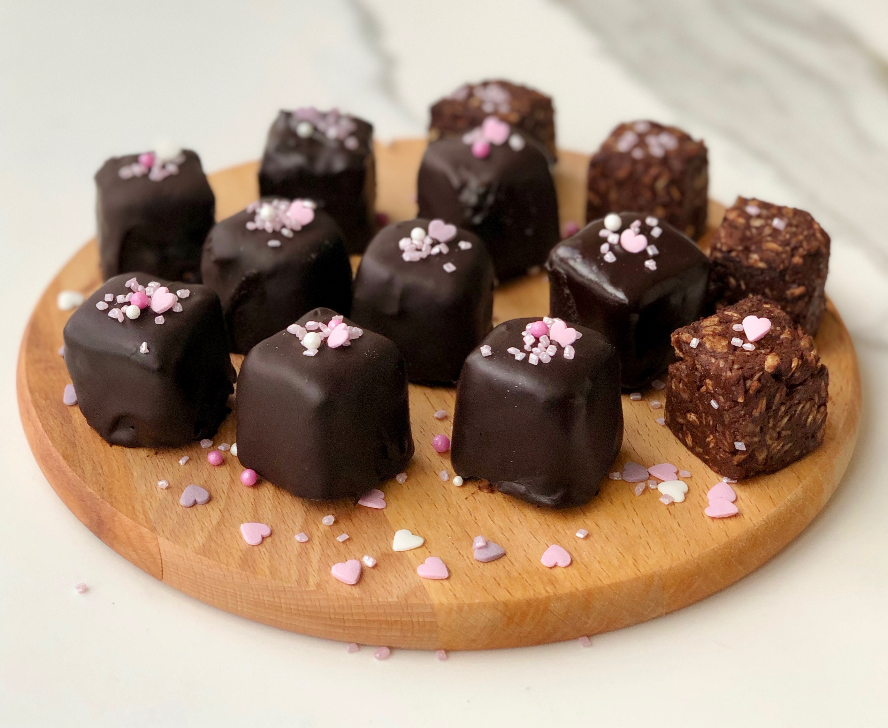

...Çikolata Küpleri...
çikolata ve şam fıstıklı tadımlık lezzetler... Yalnızca dört malzeme ile hazırlanan çikolata Küpleri, renkli kağıtlarda veya kürdan batırılarak servis edilir.
Özellikle kalabalık sofralarda yer verilen çikolata küpleri, doğum günü gibi özel etkinliklerde sunulur.
Tarif: Fırat Dagtekin

Kaş Kişilik: 4 Kişilik Hazırlama SÜresi: 30 Dakika Pişirme Süresi: 10 Dakika
Çikolata Küpleri Tarifi için Malzemeler
- 350 gr bitter çikolata
- 150 ml krema
- 1 çorba kaşığı tereyağı
- 150 gr şamfıstık (badem veya fındık olabilir)
Çikolata Küpleri Nasıl Yapılır?
- Biiter çikolatayı benmari usulü eritin
- Eriyen Çikolatanın üzerine krema ve tereyağını ekleyip iyice karıştırıp tencereyi bir tezgaha alın
- Şamfıstıkları havanda çok az dövüp irili ufaklı parçalara bölün
- Ufalanan fıstıkları çikolatalı krema karşımıba ekleyip karıştırın
- Hazırladığınız çikolatayı varsa alüminyum hazır bir kare tepsiye dökün
- Buzdolabında iki saat bekletin
- Çikolatayı kalıptan çıkarın. Kare Parçalara bölün